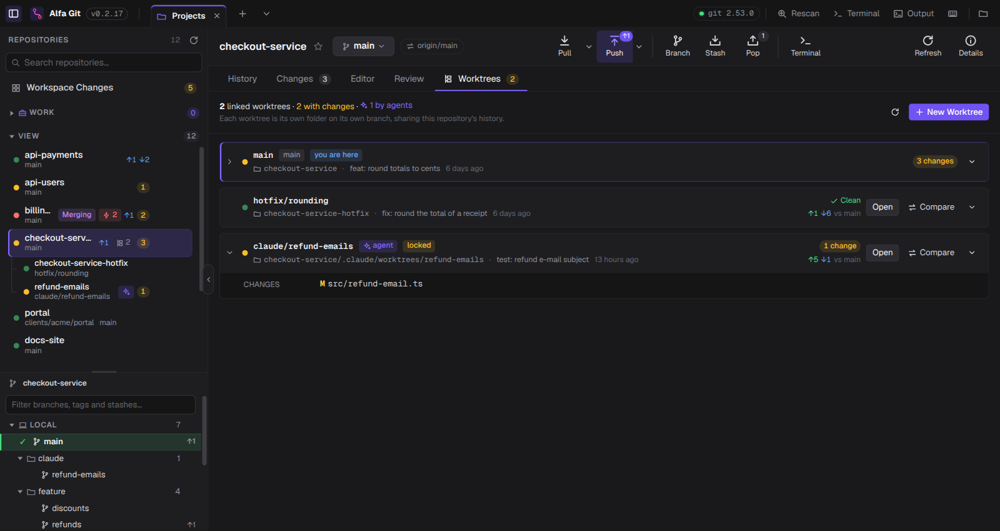
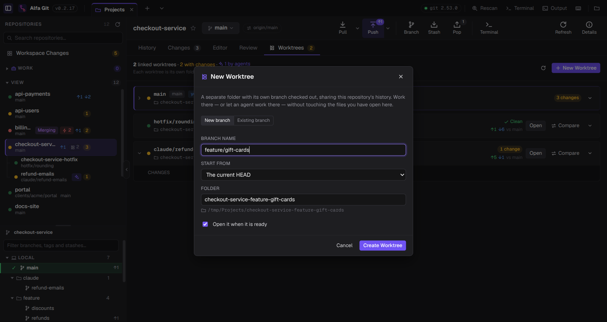
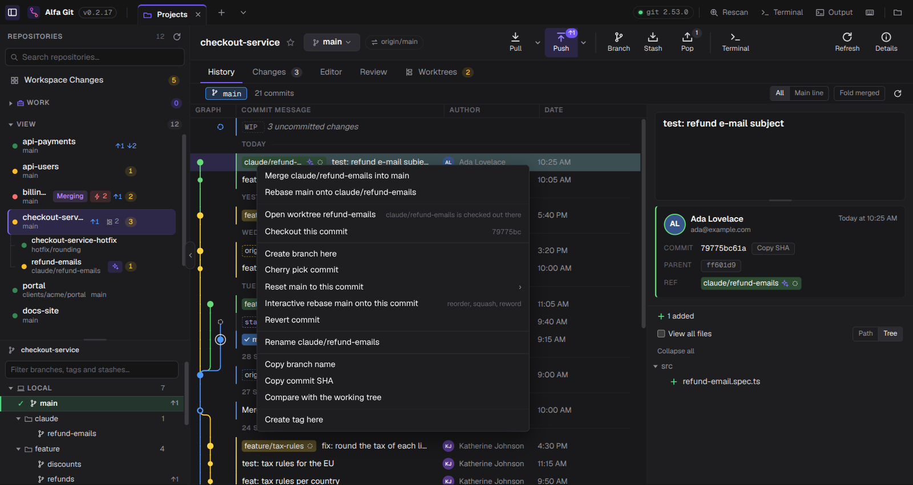

Guide
Git worktrees, explained
Work on two branches at the same time without stashing, cloning twice or losing your
place. This guide covers what a worktree is, the git worktree commands, and how to use worktrees
in Alfa Git — including the ones coding agents create for you.
What a worktree is
A Git repository has one working tree: the folder with your files, checked out on one
branch. git worktree adds more of them. Each linked worktree is another folder,
on its own branch, that shares the same repository: the same commits, branches, tags, remotes and config.
Nothing is copied or downloaded. A commit made in one worktree is immediately visible from the others,
because there is only one .git. What each worktree has of its own is its files, its staging area
(index) and its HEAD — the branch it is on.
The folder that holds the .git directory is the main worktree. In a linked
worktree, .git is a small file that points to that worktree's own entry inside the main one's .git/worktrees/. That is why you should never delete a
linked worktree's folder by hand: the repository would keep a record of it (see
Common problems).
When to use one
- An urgent fix in the middle of a feature. Open a worktree on
main, fix, commit, push. Your feature branch stays exactly as you left it — no stash, no half-finished commit. - Reviewing a pull request. Check the branch out in its own folder, run it and its tests, while your editor keeps your own work open.
- Long builds or test runs. Let them run in one worktree while you keep coding in another.
- Coding agents in parallel. Claude Code, Codex and Cursor give each task its own worktree, so several agents (and you) can work on the same repository at once without touching each other's files.
- Comparing behaviour. Run the old and the new version side by side.
One rule shapes everything else: a branch can be checked out in only one worktree at a time. Git refuses to check out a branch that another worktree is on, so two folders never fight over the same branch.
In the terminal
Everything below is plain Git (2.17 or newer for all of it; Alfa Git needs 2.30 anyway). Run it from inside the repository.
Create a worktree
# a new branch, starting from where you are git worktree add ../checkout-service-gift-cards -b feature/gift-cards # a new branch from somewhere else (a tag, another branch, a commit) git worktree add ../checkout-service-hotfix -b hotfix/rounding v1.1.0 # an existing branch git worktree add ../checkout-service-review feature/refunds
The first argument is the new folder, usually next to the repository. Then cd into it and work
as usual: git status, git commit and git push all act on that
worktree's branch.
See them
git worktree list
/home/you/Projects/checkout-service d58320a [main]
/home/you/Projects/checkout-service-hotfix 9ac4877 [hotfix/rounding]
/home/you/Projects/checkout-service/.claude/worktrees/refund-emails 79775bc [claude/refund-emails] locked
Remove, lock and clean up
# delete the folder and forget the worktree (the branch is kept) git worktree remove ../checkout-service-hotfix # it refuses if there are uncommitted changes; --force discards them git worktree remove --force ../checkout-service-hotfix # protect a worktree from remove and prune (agents do this) git worktree lock --reason "agent session" ../checkout-service-review git worktree unlock ../checkout-service-review # forget worktrees whose folder was deleted by hand git worktree prune
Removing a worktree never deletes its branch, and its commits stay in the repository. Delete the branch separately when you are done with it.
In Alfa Git
Alfa Git runs those same commands for you, and shows every worktree as a repository of its own — with its status, Changes, History and Review — nested under the repository it belongs to.
Find them
- Open your projects folder as a workspace. Worktrees appear under their repository in the sidebar, even the ones outside the folder, as long as the repository itself is inside it. Click the count next to the repository to fold or unfold them.
- Select the main repository and open the Worktrees tab. Each worktree is a card with its branch, folder, uncommitted changes, how far it is ahead (↑) and behind (↓) the main worktree, and its last commit. you are here marks the one you have open; badges say when one is main, locked, made by an agent, or its folder is missing.
- Open the arrow on a card to see its changed files; click one to see its diff.

Create one
- Click New Worktree in the Worktrees tab, or right-click a repository in the sidebar and choose New Worktree….
- Choose New branch (and where it starts from) or Existing branch. Branches already checked out in another worktree are listed but can't be picked.
- Check the Folder name: it is created next to the main worktree, and the full path is shown under it.
- Leave Open it when it is ready on and click Create Worktree.

Work across worktrees
- Open switches Alfa Git to that worktree; Open in Editor and Open in Terminal (in the card's menu) open it in your own tools.
- Compare opens Review with the worktree's branch against the main one: its commits, every file it changes, and whether merging it would conflict.
- In the History, a branch that another worktree has checked out carries a worktree icon (a spark for an agent's). Git would not let you check it out here, so double-clicking it — or Open worktree in its right-click menu — takes you to that worktree.

Remove one
Choose Remove Worktree… in the card's menu, or right-click the worktree in the sidebar. The system asks you to confirm. If the worktree has uncommitted changes, or is locked (agents lock theirs), the dialog says so — naming the lock's reason — and only Remove Anyway removes it. The branch is always kept.
If a worktree's folder was deleted outside the app, its card says folder missing and
Clean up runs git worktree prune to forget it.
Worktrees made by coding agents
Claude Code, Codex and Cursor can work each task in its own worktree, usually under
.claude/worktrees/, .codex/worktrees/ or .cursor/worktrees/ — often
outside the folder you opened. Alfa Git finds them through the repository they belong to, so you don't have to
go looking:
- They are listed under their repository with an agent badge, and they show up in Workspace Changes like any other repository.
- Changes the agent makes appear on their own, as files are written and commits are made.
- Before merging an agent's work, Compare it to review every file, then tidy its commits with an interactive rebase (squash, fixup, reword) if you like.
- When the task is done, remove the worktree from the app: it asks first, because agents lock their worktrees while they work.

Common problems
“is already checked out at” / “is already used by worktree at”
That branch is checked out in another worktree. Open that worktree instead (in Alfa Git, double-click the branch in the History), or create a new branch from it.
I deleted a worktree's folder by hand
Git still lists it, marked prunable. Run git worktree prune, or click
Clean up in the Worktrees tab. The branch and its commits are still there.
“cannot remove a locked working tree”
Someone — usually an agent — locked it. Check with git worktree list that nothing is still using
it, then git worktree unlock it, or use Remove Anyway in Alfa Git.
My stash shows up in every worktree
That is expected: the stash belongs to the repository, not to a worktree. Alfa Git shows each stash on the commit it was made from.
Cheat sheet
| You want to | Git | Alfa Git |
|---|---|---|
| Create | git worktree add <folder> -b <branch> | Worktrees › New Worktree |
| List | git worktree list | Sidebar, Worktrees tab |
| Review | git diff main...<branch> | Compare |
| Open | cd <folder> | Open, or double-click its branch |
| Remove | git worktree remove <folder> | Remove Worktree… |
| Clean up | git worktree prune | Clean up |